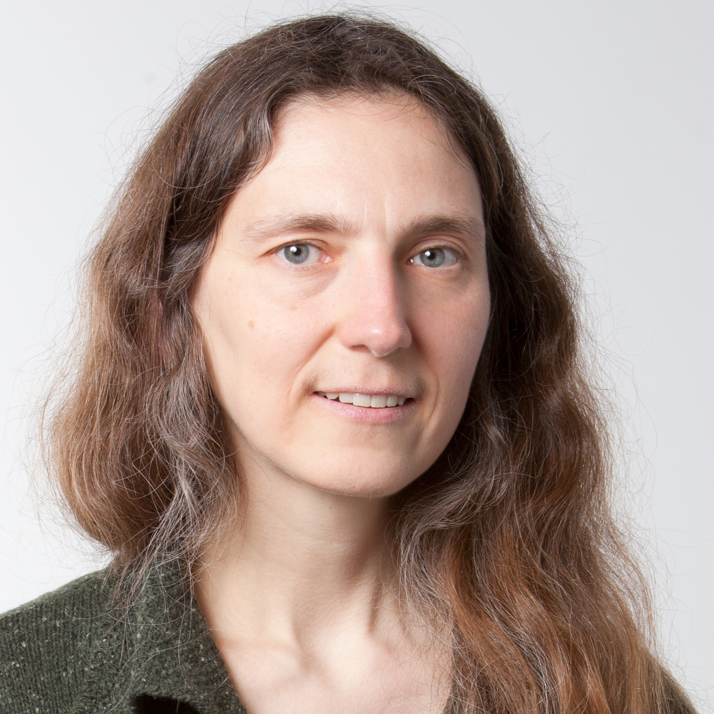

")
SCAM 2015 Keynote by Julia Lawall
Julia Lawall is a Senior Researcher at Inria Paris-Rocquencourt. Her
research interests are in the area of improving the quality of
infrastructure software, using a variety of approaches including program
analysis, program transformation, and the design of domain-specific
languages. She is the main developer of the tool Coccinelle for program
matching and transformation in C code. Over 1200 patches based on her
research have been accepted into the Linux kernel.